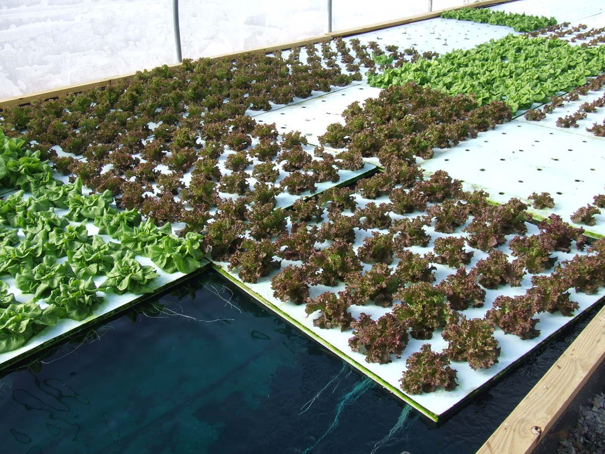
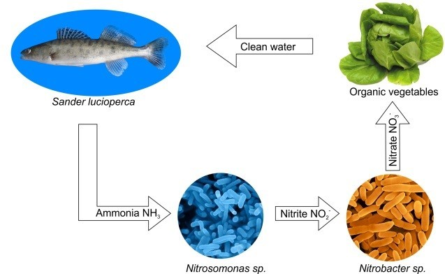

<!DOCTYPE html>
<html>

<head>
    <meta charset="utf-8">
    <meta name="viewport" content="width=device-width, initial-scale=1.0, shrink-to-fit=no">
    <title>Hunger, The Blog</title>
    <meta name="description" content="A blog to keep track of my research and progress as founder of BeneVox">
    <link rel="stylesheet" href="assets/bootstrap/css/bootstrap.min.css">
    <link rel="stylesheet" href="https://fonts.googleapis.com/css?family=Open+Sans:300italic,400italic,600italic,700italic,800italic,400,300,600,700,800">
    <link rel="stylesheet" href="https://fonts.googleapis.com/css?family=Lora:400,700,400italic,700italic">
    <link rel="stylesheet" href="https://fonts.googleapis.com/css?family=Bitter:400,700&amp;display=swap">
    <link rel="stylesheet" href="https://fonts.googleapis.com/css?family=Open+Sans&amp;display=swap">
    <link rel="stylesheet" href="https://fonts.googleapis.com/css?family=Roboto&amp;display=swap">
    <link rel="stylesheet" href="assets/fonts/font-awesome.min.css">
    <link rel="stylesheet" href="assets/fonts/ionicons.min.css">
    <link rel="stylesheet" href="assets/css/Footer-Dark.css">
    <link rel="stylesheet" href="assets/css/Header-Dark.css">
    <link rel="stylesheet" href="assets/css/Navigation-Clean.css">
    <link rel="stylesheet" href="assets/css/Newsletter-Subscription-Form.css">
    <link rel="stylesheet" href="assets/css/Team-Clean.css">
</head>

<body>
    <nav class="navbar navbar-light navbar-expand-lg fixed-top" id="mainNav" style="background: #eae8e8;">
        <div class="container-fluid"><a class="navbar-brand" href="blog.html" style="color: #880000;font-family: Lora, serif;background: linear-gradient(black, white), var(--bs-body-font-weight);border-color: #880000;">Hunger, The Blog</a><button data-bs-toggle="collapse" data-bs-target="#navbarResponsive" class="navbar-toggler" aria-controls="navbarResponsive" aria-expanded="false" aria-label="Toggle navigation"><i class="fa fa-bars"></i></button>
            <div class="collapse navbar-collapse" id="navbarResponsive">
                <ul class="navbar-nav ms-auto">
                    <li class="nav-item"><a class="nav-link" href="blog.html" style="color: #880000;">Home</a></li>
                    <li class="nav-item"><a class="nav-link" href="about.html" style="color: #880000;">About us</a></li>
                    <li class="nav-item"><a class="nav-link" href="contact.html" style="color: #880000;">Contact us</a></li>
                    <li class="nav-item"><a class="nav-link" href="index.html" style="color: #880000;">Benevox</a></li>
                </ul>
            </div>
        </div>
    </nav>
    <header class="masthead" style="background: url(&quot;assets/img/Tumblr_l_103531107080332.jpg&quot;);">
        <div class="overlay"></div>
        <div class="container">
            <div class="row">
                <div class="col-md-10 col-lg-8 mx-auto position-relative">
                    <div class="post-heading">
                        <!--blog post about aquaponics analysis at ABUAD farm-->
                        <h1 class="post-title">Economic Analysis of Aquaponics system at ABUAD Farm</h1>
                        <h4 class="post-subtitle">Overview of Aquaponics system</h4><span class="meta">Posted by&nbsp;<a href="#">Peter</a>&nbsp;on May 17th, 2022</span>
                    </div>
                </div>
            </div>
        </div>
    </header>
    <article>
        <div class="container">
            <div class="row">
                <div class="col-md-10 col-lg-8 mx-auto">
                    <p>Aquaponics is a form of agriculture that has been 
                        around for many years but is resurfacing in 
                        today's modern world and attracting many people 
                        because of its benefits and profitability. Recent 
                        studies have shown the increasing demand for 
                        the aquaponics market globally because of the 
                        rising population, lack of farming land, and high 
                        demand for organic food worldwide.</p><hr>
                    <figure>
                        <blockquote class="blockquote">
                            <p class="mb-0"><em></em></p>
                        </blockquote>
                    </figure>
                    <h4 class="section-headin0g" style="font-size: 27px;font-family: Lora, serif;border-style: dashed;text-align: center;border-color: var(--bs-yellow);">  Deep Water Aquaponics system</h4>
                    
                    <div style="text-align: center;"></div>
                   <hr>
                    <div style="text-align: center;"></div>
                    <figure>
                        <blockquote class="blockquote">
                            <p class="mb-0"></p>
                        </blockquote>
                    </figure>
                    <h1 class="section-heading" style="font-size: 28px;text-align: center;font-family: Roboto, sans-serif;border-style: dashed;border-color: var(--bs-yellow);">Nutrient Film Aquaponics system</h1>
                    <div style="text-align: center;"></div>
               <hr>
               <!--Advantages of aquaponics -->
               <h1 class="section-heading" style="font-size: 28px;text-align: center;font-family: 
               Roboto, sans-serif;border-style:
                dashed;border-color: var(--bs-yellow);">Advantages of Aquaponics Over Conventional Aquaculture</h1>
                <ul class="advantages-aquaponics">
                    <li class="">Organic Produce - Food grown in aquaponics is not exposed to chemicals, including 
                        fertilizers and weed killers, because they are grown naturally with the help of fish waste. </li>
                    <li>Year-round farming - Aquaponic growers do not depend on weather conditions to farm 
                        because of their ability to regulate temperatures. So they can cultivate organic food all year round.</li>
                    <li>Faster Plant Growth - Plants grown in aquaponics naturally grow faster because they have access to the nutrients 24 hours a day.Aconstantly regulated source of water also helps 
                        enhance plant growth.</li>
                    <li >Two Sources of income - Commercial aquaponics operations can enjoy two <em><b>sources of 
                        income:</b></em>  plants and fish. </li>
                    <li>Reduces the Planet's Carbon Footprint - large acres of farmland are not needed to grow 
                        aquaponics crops. Asustainable aquaponics system is viable in places where the land is 
                        rocky, unstable, or prone to drought.</li>
                    </ul>
                    <h1 class="section-heading" style="font-size: 28px;text-align: center;font-family: 
                    Roboto, sans-serif;border-style:
                     dashed;border-color: var(--bs-yellow);">Plants that can be grown in ABUAD Farm Aquaponic system</h1>
                    <hr>
                    <!--table for analysis-->
                    <table colspan="2" wid border="3" style="border-collapse:separate;">
                        <tr style="background-color: rgba(128, 128, 128, 0.274); text-align:center;">
                    <th >NAME & 
                        AVERAGE 
                        HARVEST 
                        WEIGHT/ PLANT</th>
                        <th>TIME TO FIRST 
                            HARVEST</th>
                            <th>CROP CYCLES
                                PER 5 MONTH
                                CATFISH 
                                HARVEST</th>
                    <th>COST PER KG
                        IN NIGERIA</th>
                        <th >AVERAGE NET
                            YIELD SIZE (kg) 
                            FOR 7 PLANTS IN 
                            4 CHANNELS FOR 
                            1 CROP HARVEST</th></tr>
            <tr style="background-color: rgba(102, 99, 99, 0.116); text-align: center;">
                <td>Lettuce - 403g</td>
                <td>6-8 weeks</td>
                <td>2-3</td>
                <td>₦ 1,000</td>
                <td>11.3kg</td>   
            </tr>
            <tr style="background-color: rgba(102, 99, 99, 0.205); text-align: center;">
                <td>Basil -79g</td>
                <td>8-10 weeks</td>
                <td>2</td>
                <td>₦ 7,000</td>
                <td>2.2kg</td>   
            </tr>
            <tr style="background-color: rgba(102, 99, 99, 0.11); text-align: center;">
                <td>Bell Peppers - 
                    500g</td>
                <td>8-10 weeks</td>
                <td>2</td>
                <td>₦ 1,850</td>
                <td>14kg</td>   
            </tr>
            <tr style="background-color: rgba(102, 99, 99, 0.11); text-align: center;">
                <td>Bell Peppers - 
                    500g</td>
                <td>8-10 weeks</td>
                <td>2</td>
                <td>₦ 1,850</td>
                <td>14kg</td>   
            </tr>
            <tr style="background-color: rgba(102, 99, 99, 0.199); text-align: center;">
                <td>Tomatoes - 
                    3500g</td>
                <td>8-12 weeks</td>
                <td>2</td>
                <td>₦ 1000</td>
                <td>98kg</td>   
            </tr>
            <tr style="background-color: rgba(102, 99, 99, 0.199); text-align: center;">
                <td>Strawberries - 
                    370g</td>
                <td>4-6 weeks</td>
                <td>4</td>
                <td>₦ 2000</td>
                <td>10.3kg</td>   
            </tr></table>
            <hr>
            <!--cost effectiveness analysis-->
            <h1 class="section-heading" style="font-size: 28px;text-align: center;font-family: 
               Roboto, sans-serif;border-style:
                dashed;border-color: var(--bs-yellow);">COST Effectiveness Analysis</h1>
<ul style="list-style-type: square;">
<li>Using a 5000 gallon concrete pond with 200 fish, we can support four 
    8 ft, 7.5 inch PVC growth channels with a growing capacity of 7 crops.</li>
<li>The Plumbing system costs ₦180,000</li>
<li>The Aquaculture (fish & feed) costs ₦200,000</li>
<li>The Greenhouse and hydroponic systems amount to ₦100,000</li>
<li>The entire system costs a total of ₦480,000 (Four Hundred, Eighty 
    Thousand Naira</li>
</ul>
<!--COST Benefit Analysis-->
<h1 class="section-heading" style="font-size: 28px;text-align: center;font-family: 
               Roboto, sans-serif;border-style:
                dashed;border-color: var(--bs-yellow);">COST Benefit Analysis</h1>
                <ul style="list-style-type:square">
                <li>Aquaponics systems are very low maintenance, an existing system can be easily reused and expanded for 8+ years.</li>
                <li style="text-align:justify;">Growing 28 Tomato plants at N1,000/kg during one 5-month catfish rearing period from a <b>pond of 200 fish</b> creates a 
                    crop-profit of <b>N196,000(ONE HUNDRED, NINETY SIX THOUSAND NAIRA).</b></li>
                <p style="text-decoration:underline">(AVERAGE YIELD WEIGHT X SEVEN CROPS X FOUR CHANNELS) X TWO, 8 WEEK REARING PERIODS (3500X7X4)X2).</p>
                <li>Break even occurs after <b>12 weeks</b> (3500x7x4)x3)=<b> N294,000 (TWO HUNDRED, NINETY FOUR THOUSAND NAIRA) </b>. 
                    The only fixed inputs are <b>seeds, fish feed and electricity</b>.</li>
                <li>The plumbing system scaled for a fish <b>pond of 1,500</b> fishes costs approximately 
                    <b>N500,000 -N700,000</b> (extra pvc pipes & 
                    pumps) break-even occurs after<b> 8 weeks</b>.</li>
                    <li>This indicates that the greater the scale, the more efficient and profitable the system becomes.</li>
                   <hr>
                   <h1 class="section-heading" style="font-size: 28px;text-align: center;font-family: 
                    Roboto, sans-serif;border-style:
                     dashed;border-color: var(--bs-yellow);">Conclusion</h1>
              <p>Commercial Aquaponics can be profitable when 
                done on a specific scale. Starting can be a 
                challenge, but it is an ideal investment because 
                aquaponics is a very low maintenance and costefficient system that provides fresh organic yield 
                much faster than any other farming method.</p>
            
            </ul>
                </div>
            </div>
        </div>
    </article>
    <footer style="padding-bottom: 0px;">
        <!-- Start: Footer Dark -->
        <footer class="footer-dark" style="padding-bottom: 0px;">
            <div class="container">
                <div class="row">
                    <!-- Start: Services -->
                    <div class="col-sm-6 col-md-3 item">
                        <h3>Services</h3>
                        <ul>
                            <li><a href="#">Research</a></li>
                            <li><a href="#">Development</a></li>
                            <li><a href="#">Hosting</a></li>
                        </ul>
                    </div><!-- End: Services -->
                    <!-- Start: About -->
                    <div class="col-sm-6 col-md-3 item">
                        <h3>About</h3>
                        <ul>
                            <li><a href="#">Company</a></li>
                            <li><a href="#">Team</a></li>
                            <li><a href="#">Careers</a></li>
                        </ul>
                    </div><!-- End: About -->
                    <!-- Start: Footer Text -->
                    <div class="col-md-6 item text">
                        <h3>BeneVox</h3>
                        <p style="font-size: 17px;">BeneVox is an entity whose primary mission is tackling the problem of vulnerable people who cannot for one reason or another acquire the fundamental support and opportunities needed for anyone to live and create a life for themselves and their own.</p>
                    </div><!-- End: Footer Text -->
                    <!-- Start: Social Icons -->
                    <div class="col item social"><a href="#"><i class="icon ion-social-facebook"></i></a><a href="#"><i class="icon ion-social-twitter"></i></a><a href="#"><i class="icon ion-social-snapchat"></i></a><a href="#"><i class="icon ion-social-instagram"></i></a></div><!-- End: Social Icons -->
                </div><!-- Start: Copyright -->
                <p class="copyright" style="padding-top: 3px;">BeneVox © 2022</p><!-- End: Copyright -->
            </div>
        </footer><!-- End: Footer Dark -->
    </footer>
    <script src="assets/bootstrap/js/bootstrap.min.js"></script>
    <script src="assets/js/clean-blog.js"></script>
</body>

</html>